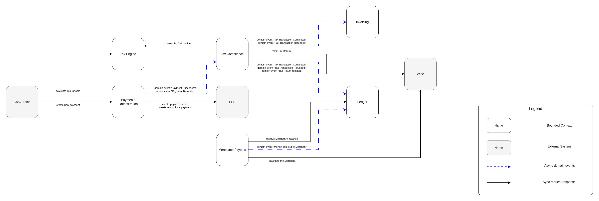

MoR System Design
Communications Diagram
This diagram combines communications from the Event Storming diagram, and the Conceptual Data Model, and focuses on the communications.

All communications can be divided by the consistency type: strong consistency vs eventual consistency.
Asynchronous communications (that have eventual consistency type) typically help to improve the system's performance, scalability, availability, and lower coupling between Bounded Contexts - this is why I've tried to choose them where applicable.
The only communication that requires strong consistency is the request from Merchants Payouts to the Ledger to reserve the Merchant's balance for the payout.
The communication to "Lookup TaxCalculation objects" would normally be asynchronous data streaming - but taking into account the modelled load for the system I decided to just request it synchronously. If we had chosen to stream all of the calculations, we would have a lot of unused calculations streamed into other Bounded Contexts, because not all of the calculations will actually be paid for.